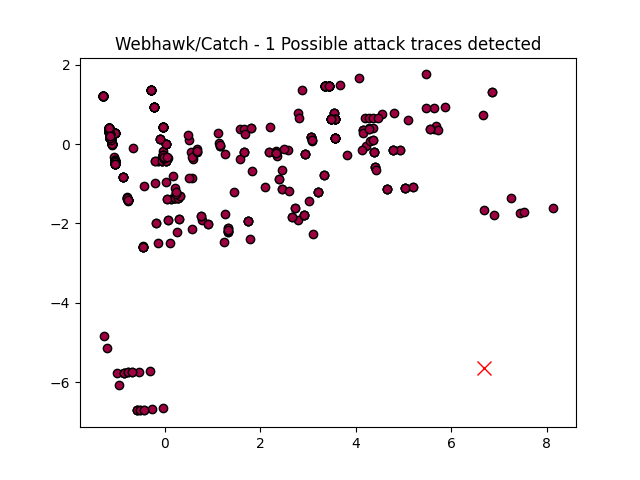

Webhawk Catch ReportUnsupervised learning Web logs/OS processes attack detection. Date: 27/06/25 at 19:13:47 GMTLog file: /Users/walid/Downloads/access.log.2025-06-24 Log type: apache logs Findings: 1 |
 |
| Severity | Related CVE(s) | Line# | LLM Insights(llama3.2) | Log line |
| High | No CVE found | 270 | This request appears to be a potential attempt at exploiting the "SQL Injection" vulnerability in the web application, specifically targeting the login functionality with a crafted URL containing malicious data. This pattern is commonly associated with attacks like SQL injection and cross-site scripting (XSS). | 156.245.17.4 - - [24/Jun/2025:06:22:21 -0700] "GET /index.php?m=admin&c=index&a=login&pc_hash= HTTP/1.1" 404 328 "http://www.secrepo.com/index.php?m=admin&c=index&a=login&pc_hash=" "Mozilla/4.0 (compatible# MSIE 9.0# Windows NT 6.1)" |